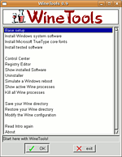

WineTools
Archivierte Anleitung
Dieser Artikel wurde archiviert, da er - oder Teile daraus - nur noch unter einer älteren Ubuntu-Version nutzbar ist. Diese Anleitung wird vom Wiki-Team weder auf Richtigkeit überprüft noch anderweitig gepflegt. Zusätzlich wurde der Artikel für weitere Änderungen gesperrt.
Zum Verständnis dieses Artikels sind folgende Seiten hilfreich:
Achtung!
Einige Tools der von WineTools installierten Programme, wie dcom98 und der Internet Explorer, setzen eine gültige Windows-Lizenz voraus. Hat man diese nicht, darf man diese Programme nicht installieren (mehr  ).
).

WineTools ist ein Zusatzprogramm zu Wine, das ähnlich wie kommerzielle Wine-Derivate (wie Crossover Office oder Cedega) die Standard-Wine-Installation aufpeppt, um es kompatibler zu machen. Es enthält Skripte, die die Installation vieler Windows-Programme anpassen, so dass diese Programme dann korrekt unter Wine arbeiten. WineTools ist aber nur eine Beta und es können Fehler auftreten.
Download¶
WineTools passend der Kompatibiltätstabelle auf der WineTools-Homepage downloaden. Ab der Wine-Version 0.9 ist die passend WineTools-Version für Ubuntu die winetools-0.9jo.
Installation¶
Das heruntergeladene tar.gz-Archiv entpacken [1] und in einem Terminals [2] in das ausgepackte WineTools-Verzeichnis wechseln. Dort führt man das Installationsskript aus:
sudo ./install
Leider macht das Skript ein paar Sachen falsch, so dass man noch die symbolischen Links richtig setzen muss. Hier mal exemplarisch für die Version wt0.9jo:
sudo cp wt0.9jo /usr/local/winetools/ sudo ln -sf /usr/local/winetools/Xdialog.builtin /usr/local/winetools/Xdialog sudo ln -sf /usr/local/winetools/wt0.9jo /usr/local/bin/wt sudo ln -sf /usr/local/winetools/wt0.9jo /usr/local/bin/winetools sudo ln -sf /usr/local/winetools/findwine /usr/local/bin/findwine
Start und Funktionen¶
Nun kann man WineTools als normaler User (Wichtig!) mit dem Befehl [2]
wt
starten.
Erklärung der wichtigsten WineTools Funktionen¶
Base setup: Grundeinstellungen
Create a Fake Windows drive: Erstellt virtuelle Laufwerke für Wine; geht aber auch mit winecfg.
DCOM98: Installation von Windows Systemdateien, die zur Benutzung von vielen Programmen nötig sind.
Install tested software: Installation von durch Winetools unterstütze Programme.
Problemlösungen¶
Leider funktioniert die Versionsübergabe nicht immer und es erscheint die Meldung:
Winetools cannot run with a Wine version older than 20050628...
Der einfachste Weg ist das Auskommentieren der Versionsüberprüfung im Skript. Dazu öffnet man die Datei /usr/local/winetools/wt0.9jo mit einem Editor [3] mit Root-Rechten. Dann sucht man nach dieser Passage:
# Version check
VER1=`echo ${WINEVER//[0-9]/}`
VER2=`echo ${VER1:0:1}`
if [ "$VER2" != "." ] ; then
# no '.' in the version number, so it's a version < 0.9
if [ "$WINEVER" -lt "20050628" ]; then
$DIALOG --title "`eval_gettext "*** ERROR ***"`" \
--msgbox "`eval_gettext "Winetools cannot run with a Wine version older than 20050628..."`" 6 60
exit $1
fi
fiJetzt ändert man es zu:
# Version check
VER1=`echo ${WINEVER//[0-9]/}`
VER2=`echo ${VER1:0:1}`
# if [ "$VER2" != "." ] ; then
# # no '.' in the version number, so it's a version < 0.9
# if [ "$WINEVER" -lt "20050628" ]; then
# $DIALOG --title "`eval_gettext "*** ERROR ***"`" \
# --msgbox "`eval_gettext "Winetools cannot run with a Wine version older than 20050628..."`" 6 60
# exit $1
# fi
# fiJetzt wird dei Datei wieder gespeichert und die WineTools sollten starten.
- Erstellt mit Inyoka
-
 2004 – 2017 ubuntuusers.de • Einige Rechte vorbehalten
2004 – 2017 ubuntuusers.de • Einige Rechte vorbehalten
Lizenz • Kontakt • Datenschutz • Impressum • Serverstatus -
Serverhousing gespendet von